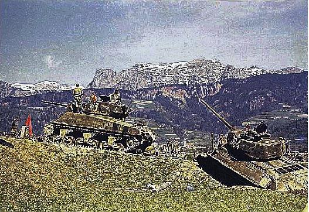

In this project, I implemented hybrid images, Gaussian and Laplacian stacks, and multiresolution blending.
The project details can be found at: project .
Hybrid images are described in the SIGGRAPH 2006 paper
by Oliva, Torralba, and Schyns. It is a static images which changes with different viewing distance.
It is constructed by two kinds of images: the high frequency and low frequency one. When you watch it
with small distance, the high frequency image would domain, however, when you are far from the image,
the low frequency will domain.
The Gaussian and Laplacian stacks are the special method to store the figures. In this stack, we store the images after filtered by Laplacian filter in the
middle levels, i,e, we keep the high frequency part of the image. And in the bottom level, we store the blurred image, which keep the low frequency. In
this way, we can recovery the original image by adding low frequency and high frequency iteratively. By applicating this stack to some images,
we can find some interesting details hidden in them.
The multiresolution blending is an application of the Gaussian and Laplacian stack. It blends two images in the each level at their Gaussian and Laplacian
stacks, then recovers the blending image from the new stack. This technology can keep the high frequency (the details) and low frequency (the shadow) for
both input images.
In this web, the process and the results for the three technologies above will be illustrated. Their fast links are:
| "Sharpen" Images | Hybrid Images | Gaussian and Laplacian Stacks | Multiresolution Blending Images |
In this part, I sharpen some old photos by unsharp masking technique, which is to subtract a blurred image from the original one. The examples below shows that with unsharp masking, some details of the original figures are revealed. In the unsharp masking stage, I use 5*5 Gaussian filter with variation 4.
|  | ||||
In this part, the hybrid images are implemented. The property of the hybrid images is that when we look at the image far, our eyes will focus on the low frequency image, and when we are close, our eyes will focus on the high frequency image. When we construct the hybrid images, we choose two different images, and align them to make the interesting part be at the center. Then we use the Gaussian and Laplacian filters to build the high frequency and low frequency images. Meanwhile, we cut some frequency from the filter results. The cutting frequency is achieved by trial and error. Finally, we combine them together.
My Favourite Result
My favourite result is to combine myself photo with a dog's photo. See them below:
|
||
The FFT results of the images are shown below:
|
||||
The cutting frequency for the low frequency image is: 50000, and for the high frequency image is: 1000.
More Result
The hybrid image which combines dog and cat is not so good. It looks like koala. I think the main reason caused this unsuccessive image is that I align their eyes at almost the same location. Thus, it's hard to separate them by different viewing distance.
 |
||
Bells and Whistles
In this part the color hybrid images are implemented. The hybrid photo with submarine and shake is good, but the other two are not so good compared with the gray ones. I think the reason that the color hybrid image is harder to achieve is the two input images have different color, and mix their color would make weird new colors in the image.In this part, Gaussian and Laplacian stacks are implemented. I use this stack to see the Mona Lisa and Lincoln & Gala.
From the stacks we can find, for Mona Lisa, she seems to be not at smile from the blurred image, but she seems to simle in the sharpened images. For the Lincoln & Gala, the blurred one represents the Lincoln, and the sharpened one reavels the naked woman.
The Gaussian and Laplacian stacks for my favourite image is:The stacks illustrate that for the blurred one the dog component reveals, and for the sharpened one my figure reveals.
In this part, the multiresolution blending images are shown. In order to do the multiresolution blending, the Gaussian and Laplacian stacks are constructed, and we blending each level with another Gaussian pyrimad. Then use the new stacks to generate the blending images. In the process, I use the 9 level stacks. My favourite image is:
 |
||
From the blending image we can find that the multiresolution blending can keep both the low frequency property as well as the high one. The details of the blending can be seen:
The other blending images are:
 |
||
The multiresolution blending of two people is not so good, because 1) their hair color is quite different; 2) the angle of their face is not the same; and 3) one of them is fatter than another one. I think the key point for multiresolution blending is to find two things which have similar shape and align them good.